A nine-week field course in editorial typography for designers who ship real work. Forty-two lessons, six live critiques, and a 180-page working manual you will actually keep on the desk.
Lifetime access. Thirty days to change your mind.
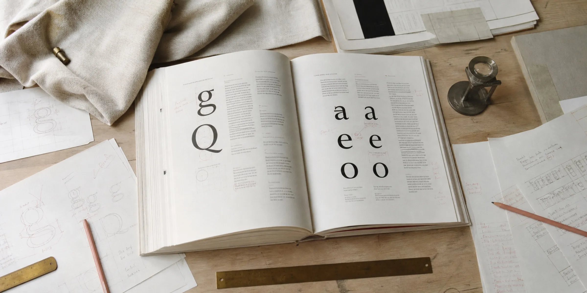
Every designer reaches the same wall. You know the layout is off. You nudge the line-height, try a different face, add a little letter-spacing, and it gets marginally less wrong. Then a senior designer moves two things and it snaps into place, and you still can't name what they did.
That gap isn't taste. Taste you already have — it's what makes the page bother you. What's missing is vocabulary: the small set of decisions typographers have been making deliberately for four hundred years, and that nobody taught you because they assumed you'd absorb it.
You won't absorb it. Nobody does. It has to be taught in order, on real work, with someone telling you what you got wrong.
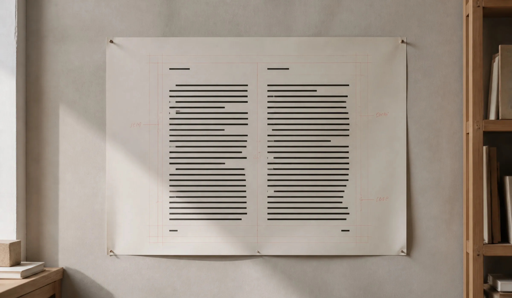
Primer teaches the decisions. Measure before face. Rhythm before ornament. Contrast as a system you can defend in a review rather than a feeling you have to apologise for.
By week three you will stop auditioning typefaces and start setting a page. By week nine you will have rebuilt four real pieces of your own work and be able to say, out loud, exactly why each one is now better.
Nothing is drip-fed and nothing expires. The critiques run live on a schedule; everything else is yours the moment you pay for it.
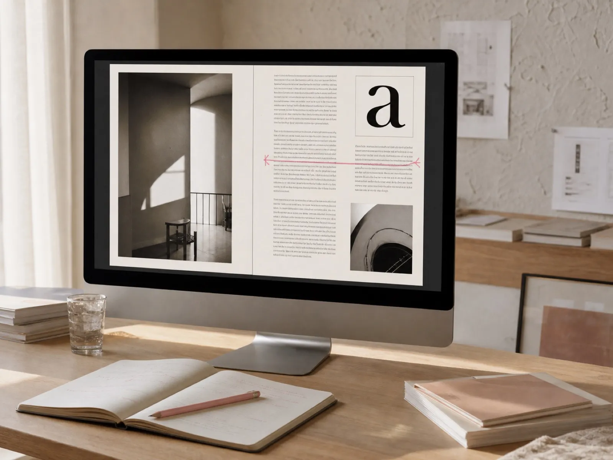
Twelve hours, cut tight. Every lesson is one decision, demonstrated on real editorial work from start to finish — no slide decks, no theory without a page attached.
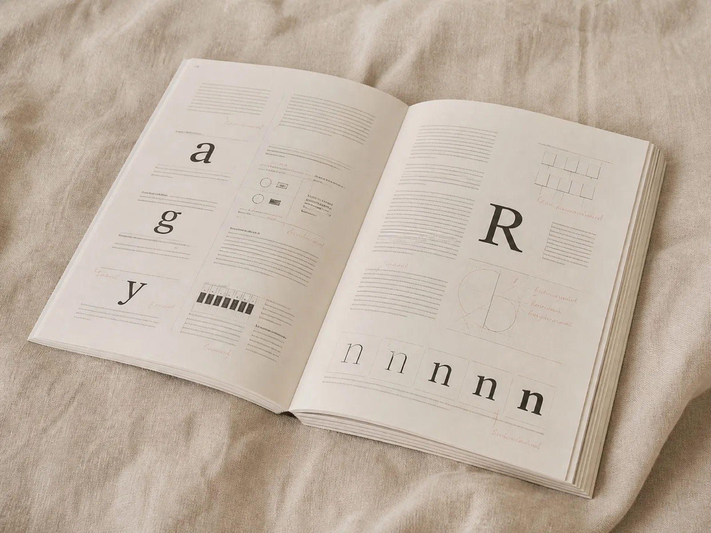
A working reference, not a companion PDF. Printed and posted anywhere in the world, plus a DRM-free digital copy that you can mark up on the day it lands.
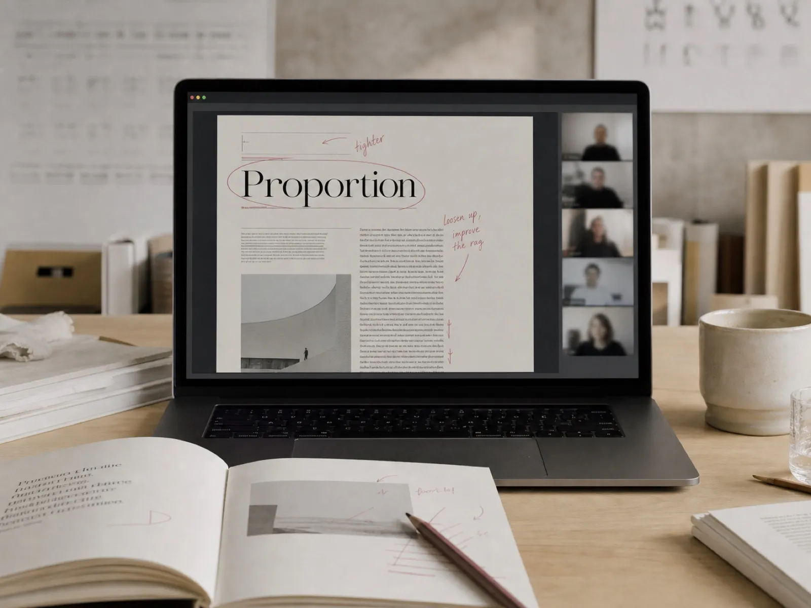
Ninety minutes each, capped at twenty seats, your work on the screen. This is the part that cannot be replaced by watching somebody else be corrected.
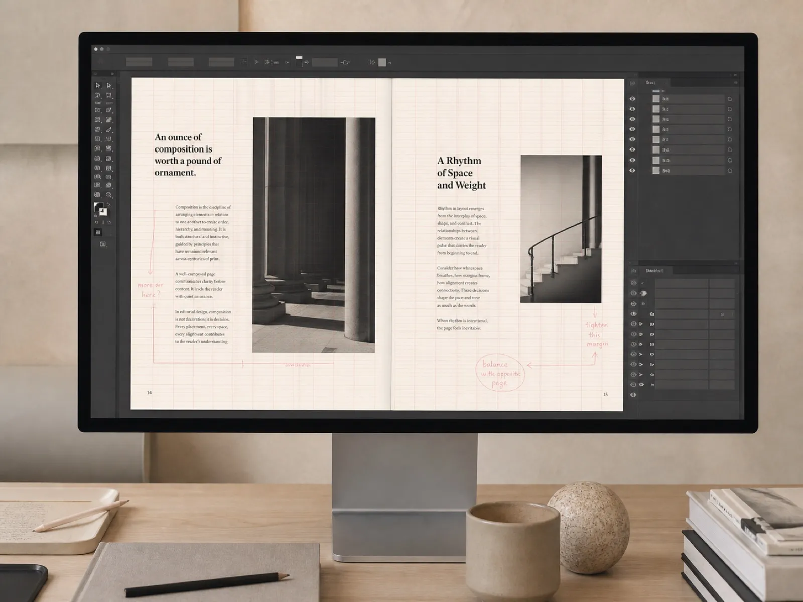
The InDesign documents and Figma files behind all forty-two lessons, unlocked and unflattened, so you can take a layout apart rather than squint at a video.
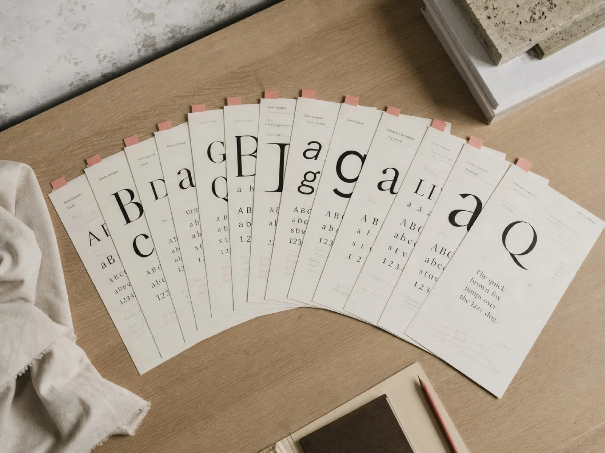
Ninety faces worth owning, each with a written note on what it is for, what it fights with, and the licence you will actually need to buy.
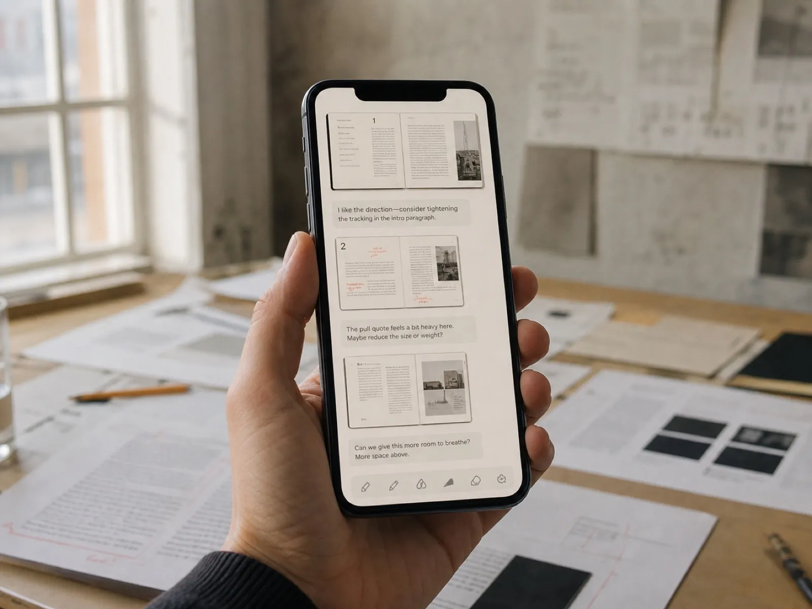
A private room with every past cohort in it. Post a page, get it read by people who have done the work. Access does not end when your nine weeks do.
Each module ends with a piece of your own work rebuilt and critiqued. You cannot skip ahead, and after week two you will not want to.
Line length and leading, and why they are one decision rather than two. We set the same paragraph eleven times until the difference stops being invisible to you.
Choosing type, and why the honest shortlist is far shorter than the foundry wants you to believe. Includes the licence maths nobody explains before an invoice arrives.
Building a type ramp that survives contact with a real CMS, a marketing team, and a headline nobody warned you about. Six steps, not fourteen.
Columns, gutters and the baseline — then the far harder lesson of when to break all three on purpose and still look deliberate about it.
Hierarchy, entry points, and the rag. The module where most students say the thing they had been squinting at for years finally resolved.
Print, screen, and the review. How to test a page properly, and how to defend a typographic decision to someone who outranks you and wants it bigger.
Most course pages ask you to take the material on faith. Here is the lesson player, a manual spread, a marked-up critique and the working files — photographed, not mocked up.
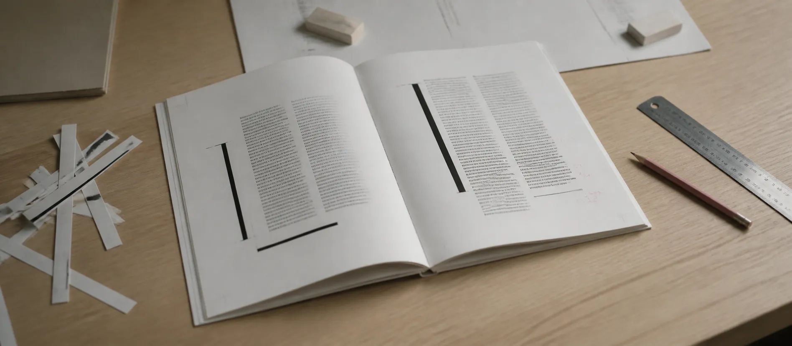
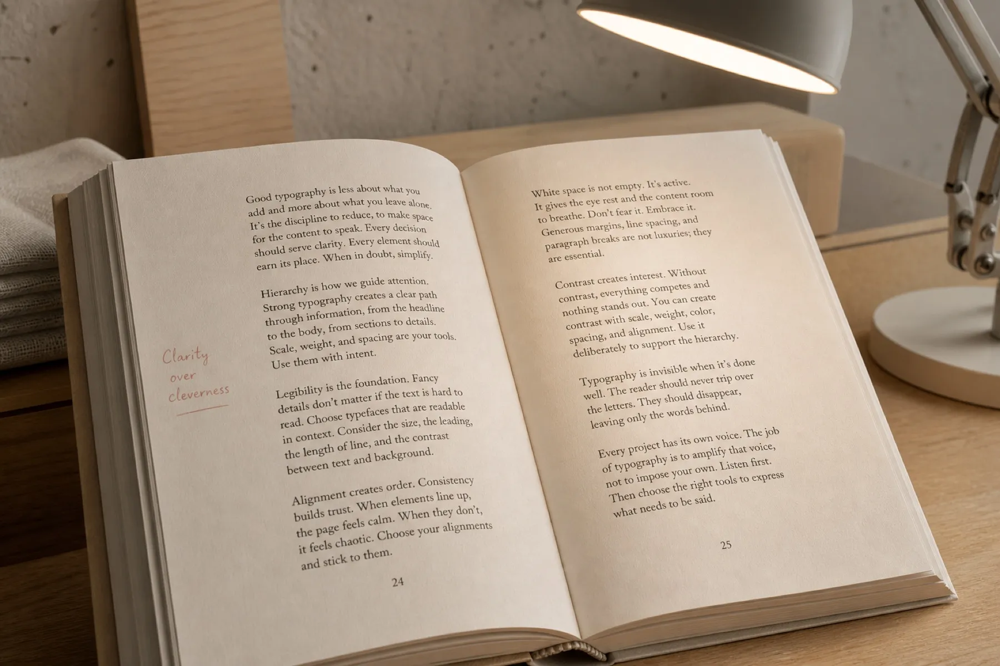
The manual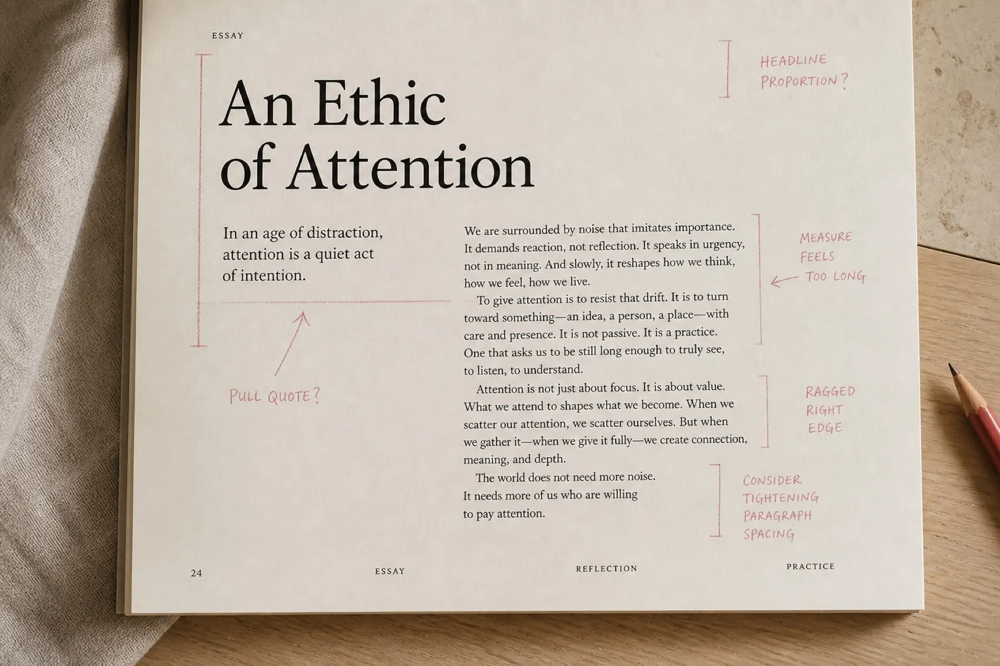
A critique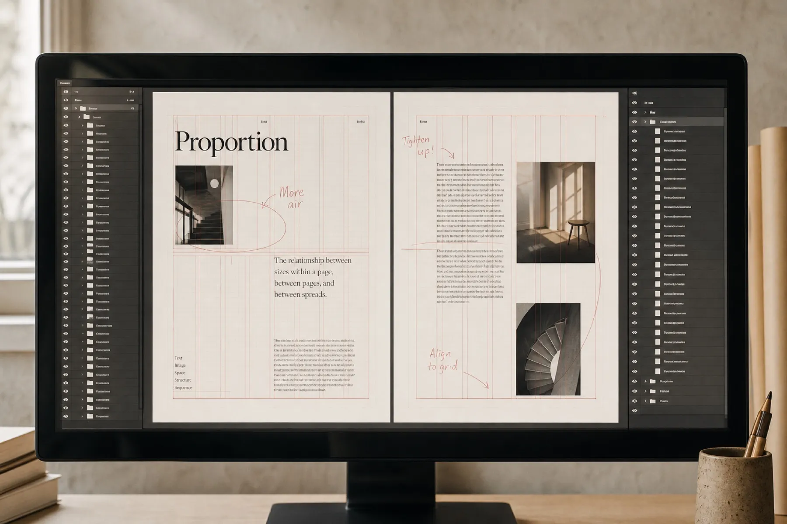
The working filesYou design for a living, or you are close enough that a portfolio matters.
You can open InDesign or Figma without a tutorial, but nobody ever taught you type.
You want to be told what is wrong with your own pages, by name, out loud.
You have four to five hours a week for nine weeks, and you will actually take them.
You have never opened a layout tool. Start somewhere cheaper and come back.
You want templates to ship on Friday. This teaches decisions, which is slower.
You are hoping to watch it through once at double speed. It will not take.
You would rather not show your work to anyone. The critiques are the course.
Eighteen years of it. Nine as art director of a national weekly, where the front page had to be reset by hand every Tuesday night and there was never enough time to be precious about it. Four running the studio at a book publisher. Five freelancing for people who could not afford to be wrong in print.
I am not going to give you rules. I am going to give you the questions the rules came from, and then make you answer them on your own work.
I came in able to make things look nice and came out able to explain why they look nice. That second thing is what got me promoted.
Week four rearranged how I look at a page. I rebuilt our entire section front the weekend after and my editor asked who redesigned it.
I had watched maybe thirty hours of type videos before this. None of it stuck, because none of it was a person showing you a page and saying: that is too tight, here is why, fix it.
The working files alone are worth the fee. Being able to open the exact document and see how it was built beats any amount of watching.
The critique is worth the whole fee. Watching someone take my page apart in real time was excruciating for about four minutes and then genuinely the most useful hour of my year.
Week one is eleven versions of the same paragraph and I nearly quit. By version nine I could see it. I think about that exercise every time I open a document now.
I bought it for the manual and stayed for the licensing lesson, which saved my studio about four thousand pounds in the first month. Nobody tells you that part.
The whole curriculum on your own clock. Everything except the live room.
All 42 filmed lessons, forever
The 180-page manual, digital and DRM-free
Every working file and the specimen library
The studio channel, with no end date
Everything above, plus the six live sessions where your own work goes on the screen.
Everything in self-paced
Six live critiques, twenty seats each
The manual printed and posted to you
Certificate, and a written end-of-course review
Work through as much as you like. If it has not changed how you set a page, reply to the receipt and the money goes back the same day — no form, no exit interview, and you keep the manual.
Three seats or more come with a shared critique slot and one invoice. Purchase orders are fine.
Get a team quoteFour to five hours: roughly ninety minutes of lessons and the rest spent setting the exercise. The people who get the most out of it treat the exercise as the course and the video as the briefing.
No, and that is deliberate. Primer assumes you can already build a layout. If you cannot, the first four weeks will move too fast to be useful.
Not to complete the course. Every exercise can be done with faces that are free to licence, and week two covers exactly when paying is worth it and when it is not.
Prices are in US dollars and charged as shown. Purchasing-power pricing is available for around forty countries — the checkout applies it automatically.
Every other Thursday at 18:00 CET, six times across the nine weeks. All six are recorded and posted, so a missed session costs you the room, not the material.
All forty-two, in English, hand-corrected rather than auto-generated. Transcripts are downloadable and the player runs at any speed without pitch artefacts.
On its own, no, and be suspicious of anyone who promises otherwise. It will make your portfolio noticeably better and give you the vocabulary to talk about it.
Reply to the receipt inside thirty days and the money goes back the same day. Under two per cent of students ask, and nobody has ever been argued with.
One payment, lifetime access, and thirty days to decide it was worth it. The critique seats are the part that runs out.
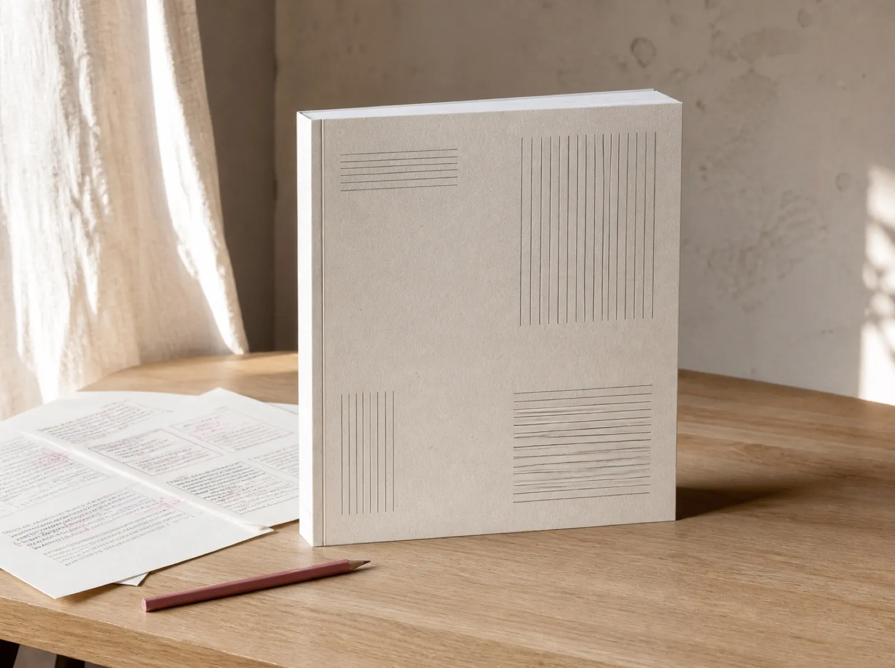
A field course in editorial typography, taught in nine weeks by Della Voss. Published by Primer Editions, Rotterdam.
Cohort ten opens 4 March. Twenty critique seats, and they have gone early every time so far.
Enrol — $349